Kỹ thuật trồng dưa leo ở Đồng bằng sông Cửu Long

1. Thời vụ và chọn giống
Dưa leo có thể trồng quanh năm ở miền Tây. Vụ Đông Xuân (tháng 11 đến tháng 2 âm lịch) thường ít mưa, thuận lợi cho việc chăm sóc. Vụ Hè Thu và Thu Đông (tháng 4 đến tháng 10 âm lịch) cần chú ý thoát nước và theo dõi bệnh giả sương mai. Khi chọn giống F1 cho vụ mưa, đối chiếu đặc tính trên nhãn của từng giống.
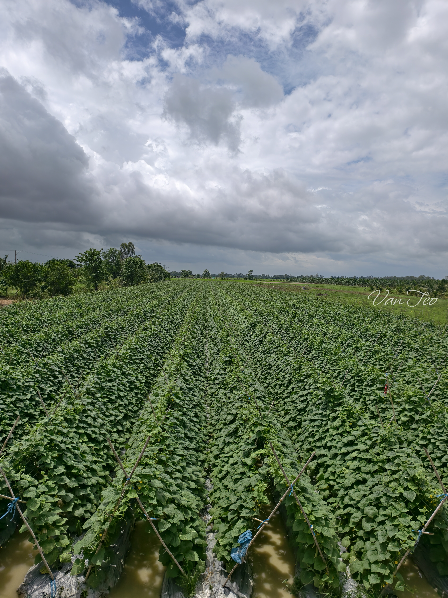
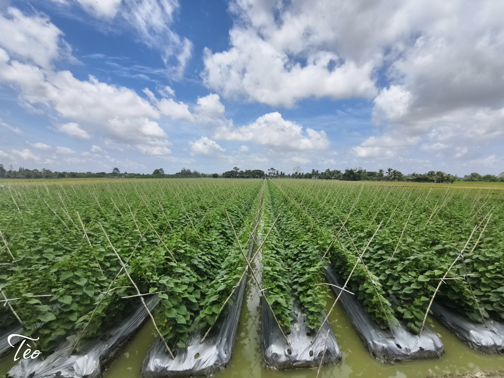
2. Làm đất, lên liếp và phủ bạt
Cày xới và phơi ải 7–10 ngày. Đo pH trước khi quyết định lượng vôi, với mức pH tham khảo 6,0–6,5. Theo bài gốc, liếp cao 20–25 cm vào mùa nắng và 30–40 cm vào mùa mưa, rãnh rộng 40–50 cm. Mặt liếp rộng 0,8–1 m cho hàng đơn hoặc 1,2–1,4 m cho hàng đôi. Khi dùng màng phủ hai mặt, đặt mặt bạc hướng lên trên.

3. Ngâm ủ, gieo hạt và mật độ
Kiểm tra hướng dẫn trên bao bì trước khi ngâm hạt, nhất là hạt đã xử lý. Bài gốc mô tả ngâm 2–3 giờ và ủ khăn ẩm 12–24 giờ đến khi hạt vừa nứt nanh. Có thể gieo vào lỗ trên màng phủ hoặc ươm bầu. Khoảng cách tham khảo là 35–40 cm giữa cây và 1,2–1,5 m giữa hàng, điều chỉnh theo giống và cách bố trí liếp.
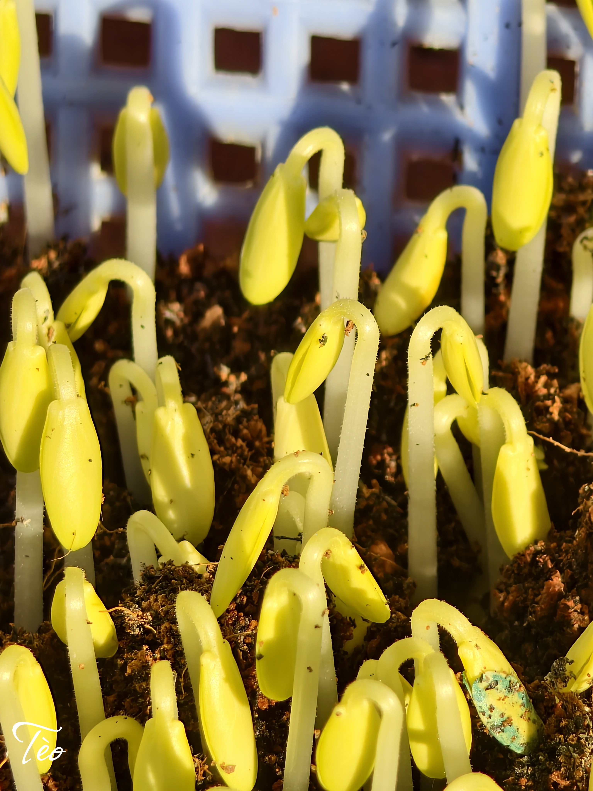
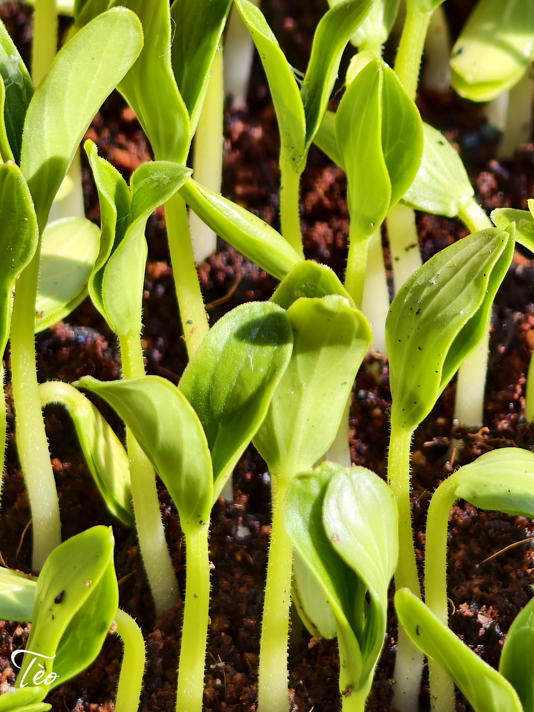
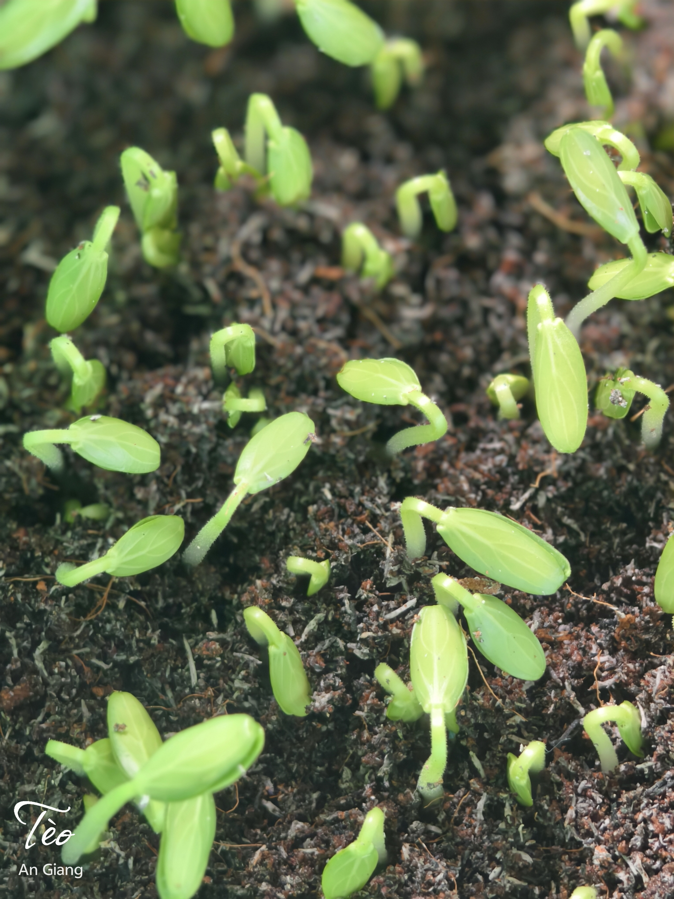
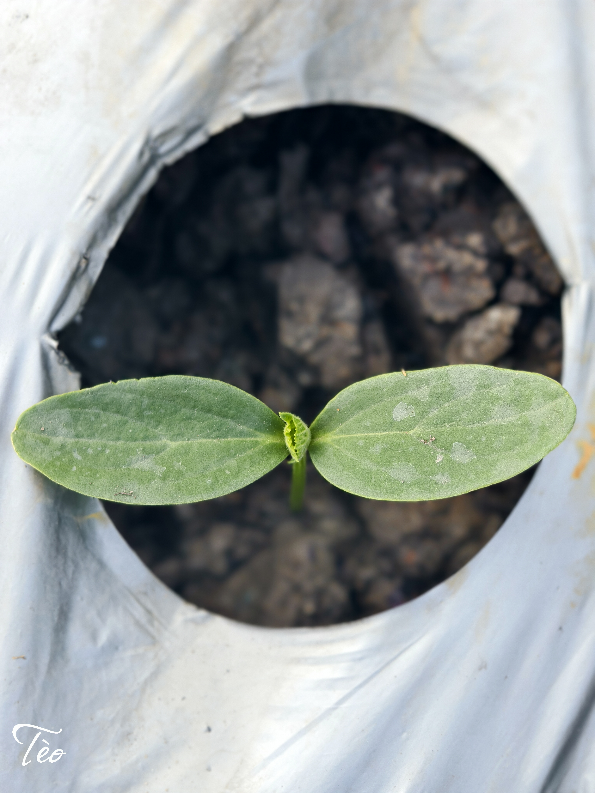
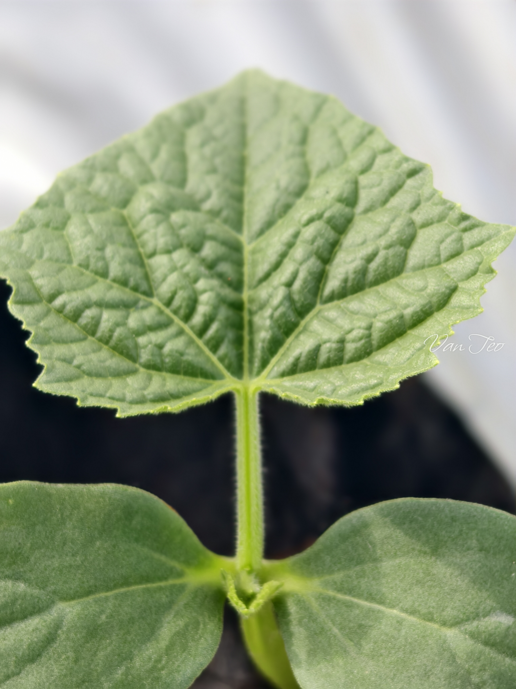
4. Làm giàn và tỉa nhánh
Khi cây có 3–4 lá thật và bắt đầu ra tua cuốn, có thể dựng giàn chữ A bằng tre hoặc tràm, kết hợp lưới. Buộc thân nhẹ bằng dây mềm theo hình số 8. Bài gốc đề xuất tỉa chồi và nụ ở 4–5 lá gốc, rồi bỏ lá già hoặc lá vàng sát đất để gốc thông thoáng. Điều chỉnh mức tỉa theo giống và sức cây.


5. Tưới nước và bón thúc
Giữ đất đủ ẩm và tránh nước đọng ở rễ. Có thể bố trí tưới nhỏ giọt dưới màng phủ. Bài gốc chia bón thúc thành ba mốc: 7–10 ngày sau trồng, 16–18 ngày sau trồng khi cây bắt đầu ra hoa cái, và sau lứa thu hoạch đầu. Lượng phân và khoảng cách giữa các lần bón cần dựa trên đất, sức cây và nhãn sản phẩm.
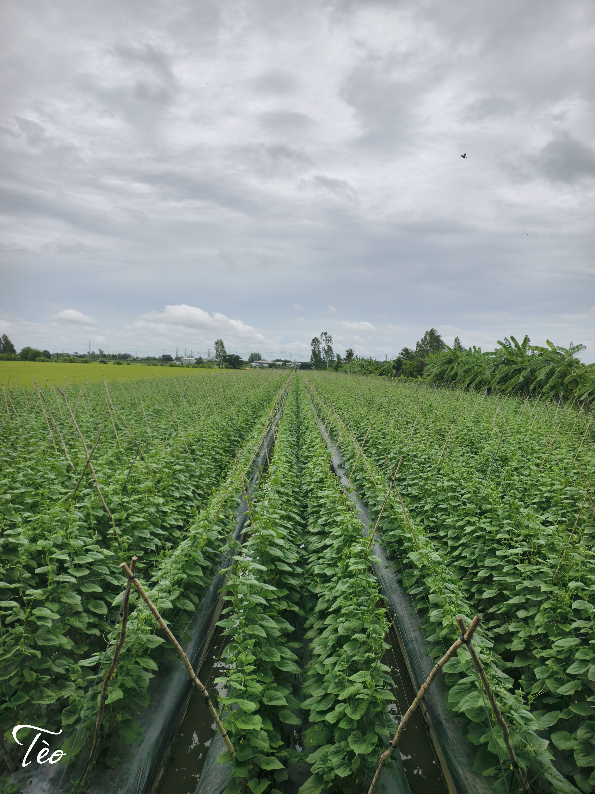
6. Quản lý sâu bệnh
Thăm ruộng để phát hiện bọ trĩ, rầy phấn trắng, dòi đục lá và các dấu hiệu bệnh như giả sương mai, phấn trắng hoặc héo dây. Có thể dùng bẫy dính vàng để theo dõi côn trùng. Xác định tác nhân trước khi xử lý. Nếu cần dùng thuốc bảo vệ thực vật, kiểm tra nhãn về cây trồng, đối tượng phòng trừ, liều dùng và thời gian cách ly trước khi thu hoạch.
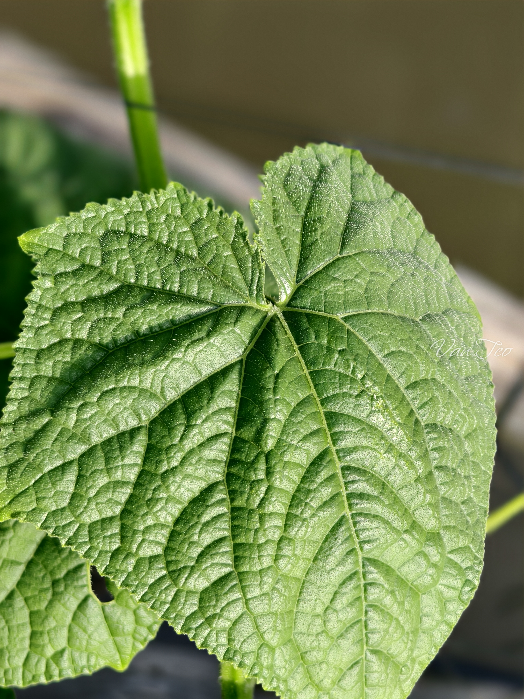
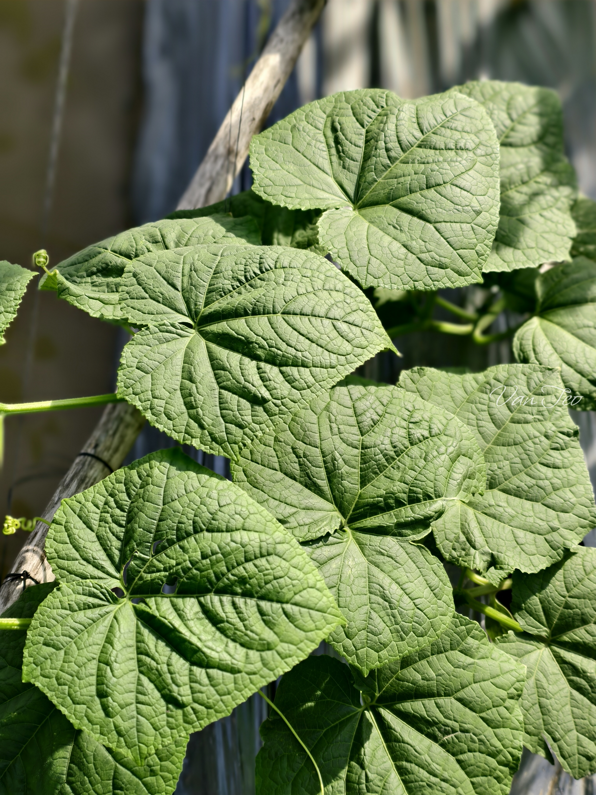
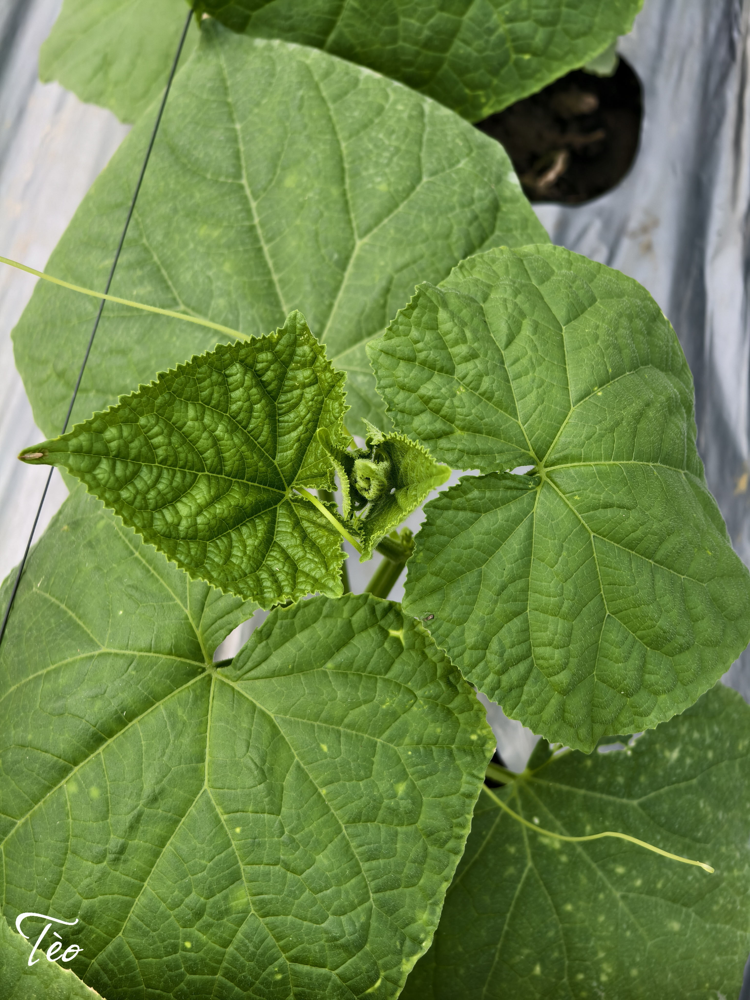
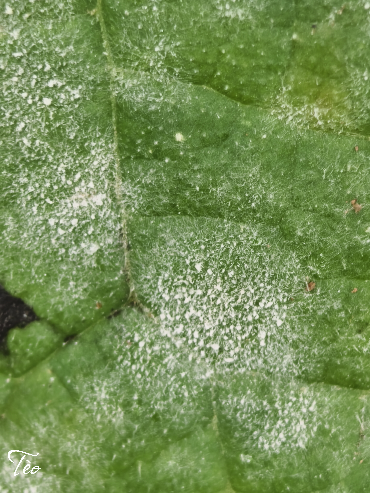
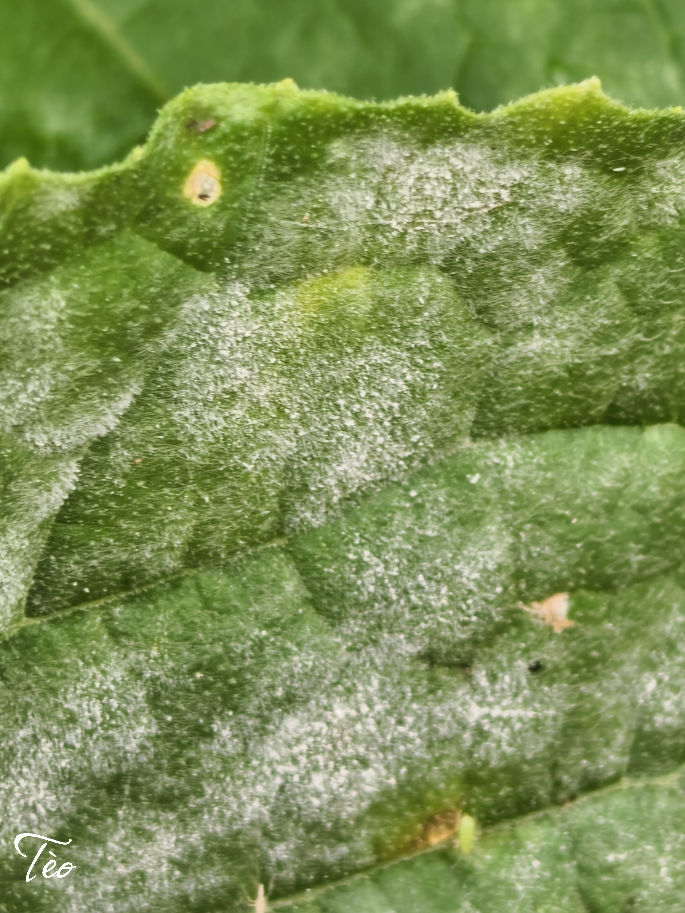